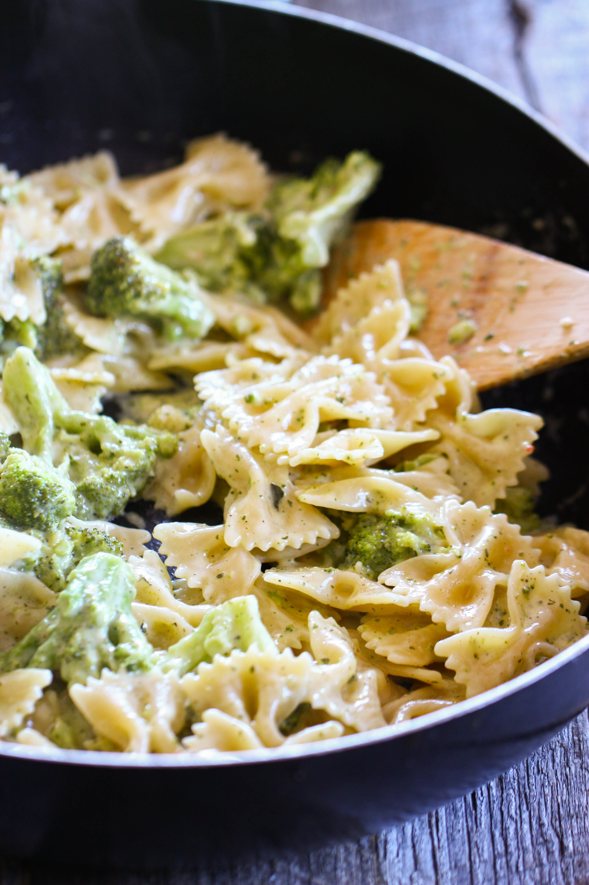

Broccoli Alfredo Pasta

Description
This broccoli Alfredo pasta is made with farfalle,
also known as bow-tie pasta. Add a salad and/or some bread for side dishes.
The meal is also great as a side dish with grilled chicken or shrimp.
The total time to make will take 30 minutes (10 minutes for prep and 20 minutes to cook)
for 2 servings. Each servings will contain 608 calories.
Ingredients
- 4 ounces farfalle (or pasta of your preference)
- 2 cups fresh broccoli florets
- 2 tablespoons unsalted butter
- 1/2 cup heavy cream
- 3/4 cup freshly grated Parmesan cheese
- 1/2 teaspoon minced garlic
- 1 pinch ground nutmeg, or to taste
- Salt and freshly ground black pepper to taste
- Fresh parsley sprigs for garnish(optional)
Steps
- Bring a large pot of lightly salted water to a boil.
Cook farfalle pasta at a boil, stirring occasionally,
until tender yet firm to the bite, about 12 minutes.
Remove to a colander; reserve the pasta water for later use
- Add broccoli to a microwave-safe container along with 1/4 cup water.
Cover and cook on High until bright green and tender with a bite,
about 4 minutes. Drain; season with salt. Keep warm
- Meanwhile, melt butter in a skillet or saucepan over low heat.
Stir in cream and allow to simmer, stirring often, 3 to 4 minutes
- Add cheese and garlic, stirring continuously, until cheese is melted.
Stir in nutmeg and remove from heat. sauce is too thick, stir in a bit
of reserved pasta water. Season to taste with salt and pepper
- To serve, combine cooked pasta, cooked broccoli, and sauce.
Garnish with fresh parsley sprigs, if desired